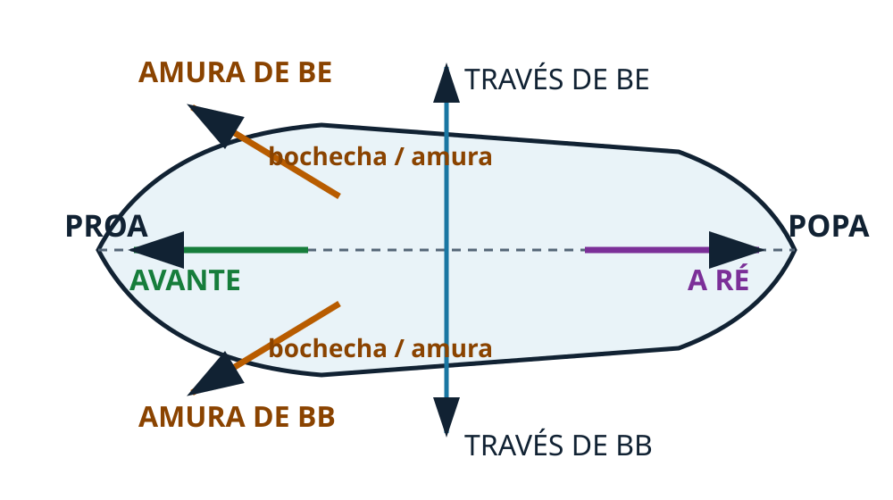
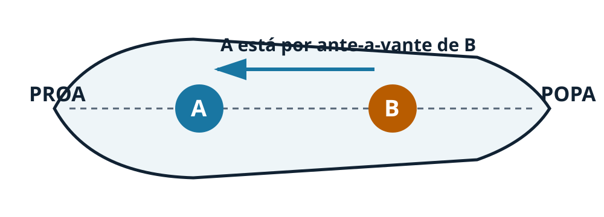

S00-M03
Direções relativas a bordo
A referência é sempre o próprio navio: avante aponta para a proa e a ré aponta para a popa.

O mesmo mapa explica quase tudo
O través é perpendicular ao plano longitudinal do navio: há través de boreste e de bombordo.
Amura: região e direção
Como parte do casco
Amura é o mesmo que bochecha: a região curva do costado próxima à proa.
Como direção
Também significa qualquer direção entre a proa e o través.
A fonte usa amura nesses dois sentidos relacionados.
Por ante-a-vante × por ante-a-ré

Se A está mais para a proa que B, A está por ante-a-vante de B. Se está mais para a popa, está por ante-a-ré.
Como raciocinar
1. Ache a proa.
2. Trace o eixo proa–popa.
3. Para lateral a 90°, pense em través.
4. Entre proa e través, pense em amura.
A orientação da página não muda os conceitos; quem manda é o eixo do navio.
Resumo visual
Primeiro identifique a referência espacial; depois escolha o termo relativo correto.
Fonte: DPC, Arte Naval, Cap. 1, arts. 1.8 e 1.20.